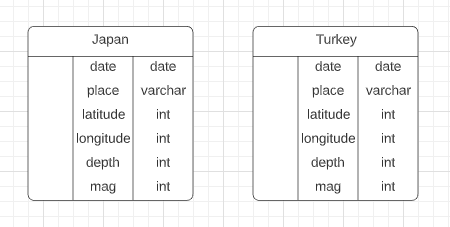

Welcome our ETL Project Report

Japan and Turkey were chosen because of their high volume of earthquakes identified by geological scientists.
Data Cleanup Using Jupyter Lab
- The Turkey dataset was in Turkish, the headers had to be translated from Turkish to English. then review the data for consistency, after researching the language translations we used ".rename" to translate the headers.
- After comparing both datasets we removed several columns from each dataset as the data was not needed.
- The data format was modified on both datasets to match using "pd.to_datetime"
- Created 2 new DataFrames selecting columns that matched both .csv's, using
Joining and Transferring to SQL
- Created a new data set called earthquake.db by joining bot dataset to one large dataset, using "pd.concat"
- Took the new larger DataFrame and exported to .csv using ".to_csv"
- Transferred the new larger database to SQLite by using the following code line: "earthquake_db.to_sql(name="earthquake2", con=create_engine("sqlite:///my_db.sqlite"))"
ERD Image

Website Creation Using VS Code
- Created "index" homepage using html:5 template to get started
- Worked together to create the porject report, updated verbiage to desribe all details to create this team project
- Transeformed .CSV file using code ".to_html" to fill the Data page
- Using Bootstrap navigation headers, containers and grids as well as styles.css file to bring the page to life.
- Researched Google looking for free images to add for visuals
- Updated all links within the document to ensure they work
Data Sources
- These two locations were chosen because of their high volumes of earthquakes identified by the geological scientist
Challenges faced during this project
- One of the largest challenges were choosing the right subject and suitable dataset to use for this journey. The exploration began with Kaggle.com and Data.world, our first topic we explored was earthquake data, but also explored UFO data. We quickly learned that the dataset for the UFO available were scarce and many had duplicate occurrences. We decided to go back to the earthquake dataset because there were more definitive datasets and sources.
- One we decided on the right topic for this project, we created the project proposal ad received approval. We began to review and wrangle the data. We started with Japan and Greece, and quickly learned that the Greece dataset was not as robust as we needed. We went back to look for another data source more comparable to the Japan dataset. We also learned that Turkey and Japan had a high count of earthquakes than in other nations. This made the perfect comparison dataset. The setback was that the Turkey dataset was in Turkish, so we determined that the data was important and the headers needed to be translated to help join the data later in the project.
- We used Jupyter lab to clean and organize the data, then imported the two files to PGadmin to join the data sources. We learned that because the datasets had identical headers that it was best to use SQLite, since there was no primary key available.
Location Maps